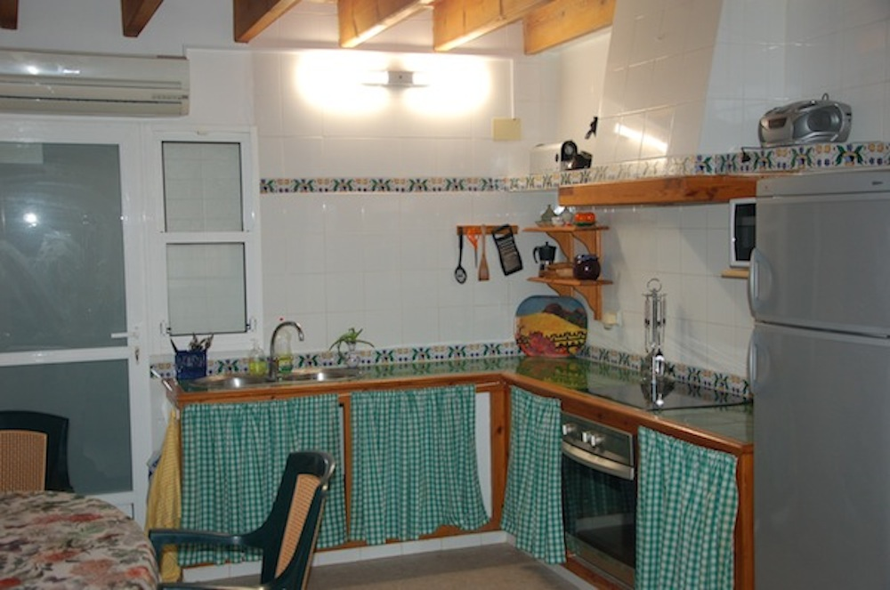

Services
Amenities in our seaside house:
We take care of every detail to ensure our guests are as comfortable as possible. The house is a recently renovated version of the traditional fisherman´s home, equipped with all the basic amenities including:
- An open air terrace with spectacular unobstructed views of the sea, including lounge chairs for your comfort
- A master bedroom, 2 additional bedrooms, 2 bathrooms and a loft
- Brand new dishwasher, and washer, to give you more time for those afternoon naps which are an essential part of any vacation
- Air conditioning in case it gets too hot at night, although the sea breeze that blows through the house means it is only rarely needed
- Heating for our winter season guests
- A crib for those traveling with small children
- A fully equipped kitchen and table and chairs that can be used outside for dinner under the stars

Additional Services
As well as the above services we offer our guests the following optional services at additional cost to further enhance your stay at Tabarca:
We can arrange to have a member of our staff greet you when you arrive at the airport of Alicante, and provide you with a means of transportation to and from the airport.
Try the wonderful Alicante countryside produce, the ripe juicy tomatoes and sweet grapes, or the excellent olive oil and wines, delivered to your door. Freshly caught fish is also available locally, and our local experts can locate the best places to buy your fish and deliver it to you. Or order your entire shopping list and have it waiting for you before you arrive or during your visit.
Alicante is a beautiful province with many tourist attractions, ranging from the well known to the unfamiliar. We can arrange to meet you at the port with a driver and interpreter (if necessary) to take you to the sites you would like to visit.
Alicante and Santa Pola have both equipment rental and schools for learning deep-sea diving, windsurfing, sailing and other water sports. We can give you information and help you make whatever arrangements you need to practice your favorite water sports.
While Tabarca has a good variety of restaurants and taverns for such a tiny town, you may want to sample the cuisine on the mainland or visit the discoteques, clubs or the casino in the port. We can make recommendations and arrange transportation for you.
Our Friends
.png)
Alqueria de Xinosa
An exquisite ecological olive oil produced right here in Alicante, try this local family owned olive oil, we can even have it waiting for you when you arrive in Tabarca.
More infoLopez Cristobal
Our favorite winemaker in Spain, from the up-and-coming region of the Ribera del Duero. Order a case of this excellent wine and you will find a price-quality ratio that's hard to beat anywhere.
More info